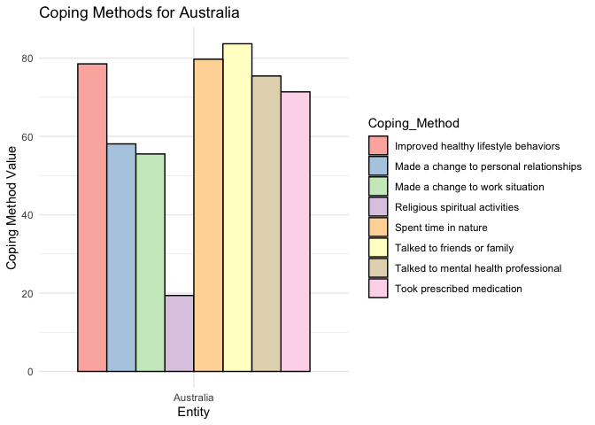

Goal of the Package
The copingmethods package is designed to support the analysis of mental health trends globally, with a focus on depression rates across different age groups and the coping methods used in various countries. By providing easy access to two unique datasets and an interactive Shiny app, copingmethods aims to aid researchers, policy-makers, and mental health professionals in exploring and understanding global mental health data.
What the Function Does
The package’s main function, launch_copingmethods(), launches an interactive Shiny app. This app allows users to explore and visualize mental health data interactively, including:
- Depression rates by age across multiple years and countries.
- Comparative analysis of coping methods used by different countries in
Additionally, the package provides two datasets:
- depression_age: Annual data on depression rates for different age groups in various countries from 1990 to 2019.
- percent_copingmethods: Data on the usage of different coping methods across countries in 2020. How to Use It
Install and Load the Package
You can install the copingmethods package from GitHub using the following command:
# Install from GitHub
remotes::install_github("ETC5523-2024/assignment-4-packages-and-shiny-apps-praj0022")Load the package
library(copingmethods)Explore the Datasets
You can access and view the datasets included in the package for further analysis or visualization:
Preview the depression_age dataset
head(depression_age)Preview the percent_copingmethods dataset
head(percent_copingmethods)Launch the Interactive Shiny App
To launch the interactive Shiny app, use the following command:
The app provides two main analysis options:
Depression by Age: View and compare depression rates across age groups and countries for different years.
Coping Methods Comparison: Compare the top coping methods used in various countries.
Why Use This Package?
The copingmethods package is a comprehensive tool for visualizing and understanding mental health data, particularly related to depression rates and coping mechanisms. By combining dataset accessibility and interactive data exploration, the package provides a convenient way for users to gain insights into mental health trends across countries and age groups.
This package is especially useful for:
- Mental health researchers looking for an easy way to explore and visualize data.
- Policy-makers interested in understanding global trends in mental health.
- Educators and students who want to learn about mental health trends through interactive data exploration.
Example
This is a basic example which shows you how to solve a common problem:
library(copingmethods)
library(ggplot2)
library(dplyr)
#>
#> Attaching package: 'dplyr'
#> The following objects are masked from 'package:stats':
#>
#> filter, lag
#> The following objects are masked from 'package:base':
#>
#> intersect, setdiff, setequal, union
library(tidyr)
long_data <- percent_copingmethods |>
pivot_longer(
cols = -c(Entity, Code, Year), # Pivot all columns except 'Entity', 'Code' and 'Year'
names_to = "Coping_Method", # New column for coping method names
values_to = "Value" # New column for the values of coping methods
)
# Filter the data to only include rows where Entity is "Australia"
filtered_data <- long_data %>%
filter(Entity == "Australia")
# Plot using the filtered data with a border around the bars and softer colors
ggplot(filtered_data, aes(x = Entity, y = Value, fill = Coping_Method)) +
geom_col(position = "dodge", color = "black") + # Add black border around bars
scale_fill_brewer(palette = "Pastel1") + # Use a soft color palette
labs(x = "Entity", y = "Coping Method Value", title = "Coping Methods for Australia") +
theme_minimal()
Where to Find and Install It
The copingmethods package is hosted on GitHub. You can install it using the remotes package as shown above.
Make sure to have remotes installed:
install.packages("remotes")Then, install copingmethods from the GitHub repository:
# Install from GitHub
remotes::install_github("ETC5523-2024/assignment-4-packages-and-shiny-apps-praj0022")For detailed documentation, examples, and usage guidelines, please refer to the pkgdown site: https://etc5523-2024.github.io/assignment-4-packages-and-shiny-apps-praj0022/